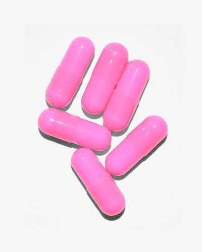
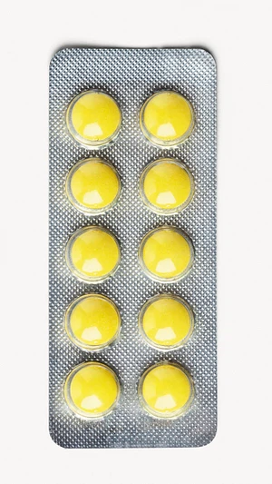
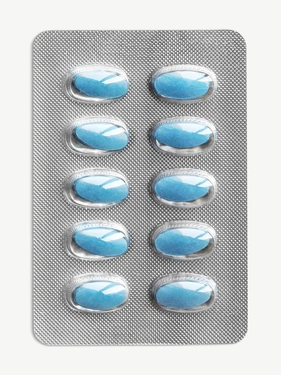
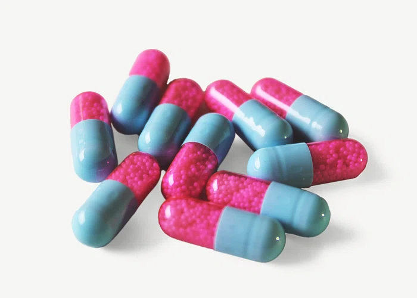
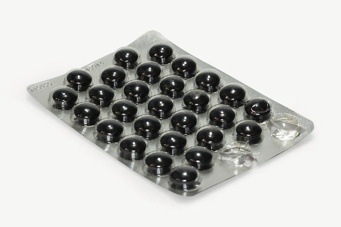

Amikacin (also called Amikin®) is an aminoglycoside antibiotic used to treat infections. Amikacin is
available as a clear liquid given by a vein (IV).
/The staff will measure the amount of amikacin in your blood shortly after you receive IV amikacin. These
blood tests tell the staff whether you are receiving an effective dose of the medicine and help decrease
the chance for side effects.
A few patients (about 1 in 500 patients) are at very high risk of developing hearing loss as a side effect of
amikacin. A genetic test called mt-RNR1 can be done to find out if you have an increased risk of
developing hearing loss from amikacin. If the test finds that you have this increased risk, your doctor may
consider using another medicine to treat your infection. To learn more about mt-RNR1 and amikacin, talk
with your doctor or pharmacist, and see “Do You Know… mt-RNR1 and aminoglycosides.” For more details, go to stjude.org/pg4kds.
Amoxicillin (also called Amoxil®, Trimox®, or Wymox®) is used to prevent or treat infections. It is available in
the following forms and strengths, all of which are taken by mouth:
250 mg capsule
500 mg capsule
250 mg chewable tablet
80 mg/ml liquid suspension
You may take amoxicillin with or without food. If you have stomach pain, take amoxicillin with food.
Shake the liquid suspension well before you take it. Use a medicine cup or oral syringe to measure
your dose to be sure you are taking the correct amount of medicine.
Store the liquid suspension at room temperature or in the refrigerator.
Store amoxicillin tablets and capsules at room temperature in a dry place.
Discard the liquid suspension after 14 days or when the expiration date on the label tells you to.
Ampicillin (also called Omnipen® or Principen®) is used to prevent or treat infections. It is available in the
following forms and strengths, all of which are taken by mouth:
250-mg capsule
500-mg capsule
50-mg/mL liquid suspension
Ampicillin is also available as a clear liquid given by vein (IV).
You should take ampicillin on an empty stomach, 1 hour before or 2 hours after meals.
Shake the liquid suspension well before you take it. Use a medicine cup or oral syringe to measure your dose
to be sure you are taking the correct amount of medicine.
Store the liquid suspension in the refrigerator.
Store the capsules at room temperature in a dry place.
Discard the liquid suspension after 14 days or when the expiration date on the label tells you to do so.

Asparaginase (also called Erwinia chrysanthemi or Rylaze®) is a medicine used to treat leukemia. It is given
as a substitute for PEGaspargase when an allergic reaction occurs.
It is a clear liquid given into a vein over 30 minutes to one (1) hour, called an IV infusion (in FEW zhen). It is
sometimes given as an injection into a muscle (IM).
Asparaginase can pose a health hazard to caregivers. All caregivers should take safety precautions while
giving this drug. For 48 hours after this drug is given, the patient’s body fluids can contain the drug.
During that 48-hour period, caregivers should follow safety guidelines when handling the patient’s vomit,
blood, urine, and bowel movements, including diapers. These guidelines include wearing gloves when
cleaning up body fluids. For a complete list of safety precautions, see “Do you know… Protecting caregivers
from drug hazards.”
Atenolol (also called Tenormin®) is an antihypertensive (drug for lowering blood pressure) known as a
beta-blocker. It reduces the workload of the heart and helps it to beat more regularly. It lowers blood
pressure in many different ways. High blood pressure levels can damage kidneys, and may lead to a stroke
or heart failure. It is also used to relieve some types of chest pain and to prevent migraine headaches.
Atenolol is available as 25-mg, 50-mg, and 100-mg tablets, all of which are taken by mouth.
Feeling dizzy, light-headed or having fainting spells
Low blood pressure
Slow heart rate
Swelling of legs or ankles
Irregular heartbeat, chest pain, palpitations
Cold, tingling, or numb hands or feet
Headache
Diarrhea
These are the most common side effects, but there may be others. Please report all side effects to the
doctor or nurse.
Baclofen (also known as Lioresal®) is a medicine that helps relax muscles and prevent muscle spasms. It is
available as a 10 mg tablet and an oral liquid suspension made by the pharmacy. Both are taken by mouth.
Baclofen may be taken on an empty or full stomach.
Store tablets at room temperature, away from heat and moisture.
Store the liquid suspension in the refrigerator. Shake well before you take the medicine. Do not use
after the expiration date printed on the label
Feeling sleepy
Rash, itching
Nausea
Headache
These are the most common side effects, but there may be others. Please report all side effects to the
doctor or nurse.
Bosentan (also called Tracleer®) is used to treat high blood pressure in the lungs and to help improve
exercise ability. It may also be given for other reasons. Talk with your doctor. Bosentan is available as a
62.5mg tablet, 125mg tablet, and a liquid made by the pharmacy. All are taken by mouth.
Most common:
Anemia (low red blood cell count)
Respiratory tract infection
Headache
Irritated nose
Low blood pressure
Flushing
These are the most common side effects, but there may be others. Please report all side effects to the
doctor or nurse.
Carboplatin (also called Paraplatin®) is an anticancer medicine. It is available as a clear liquid given into a
vein (IV).
Carboplatin can pose a health hazard to caregivers. All caregivers should take safety precautions while
giving this drug. For 48 hours after this drug is given, the patient’s body fluids can contain the drug.
During that 48-hour period, caregivers should follow safety guidelines when handling the patient’s vomit,
blood, urine, and bowel movements, including diapers. These guidelines include wearing gloves when
cleaning up body fluids.
Nausea
Vomiting
Decreased kidney function
These are the most common side effects, but there may be others. Please report all side effects to the
doctor or nurse.
Clobazam (also called Onfi®) is used to treat certain types of seizures. It may be given for other reasons.
Talk with your doctor. Clobazam is available as a 10 mg and 20 mg tablet or a liquid suspension that is
taken by mouth.
Clumsiness, trouble with coordination, weakness
Hard stools (constipation)
Feeling dizzy, drowsy, or sleepy
Drooling
Fever
Vomiting (throwing up)
These are the most common side effects, but there may be others. Please report all side effects to the
doctor or nurse.
Codeine is an opioid medicine used to treat pain. Codeine is also used to suppress cough. It is available as
15-mg, 30-mg, and 60-mg tablets. All are taken by mouth. Codeine also can be combined with other
medicines, such as:
Acetaminophen (Tylenol® with codeine), to control pain (available in liquid and tablet form)
Guaifenesin, to suppress cough (available in liquid form)
Promethazine, to suppress cough (available in liquid form)
These are the most common side effects, but there may be others. Please report all side effects to the
doctor or nurse.
Dapsone is a medicine used to prevent or treat infections, such as Pneumocystis carinii pneumonia (also
called PCP). It is used for patients who do not tolerate SMX/TMP (Septra® or Bactrim®). Dapsone is also
used to treat some skin diseases. It is available in the following forms; all are taken by mouth:
A white 25-mg tablet in individual tablet packs (called blister packs)
A white 100-mg tablet in blister pack
A 2 mg/mL liquid suspension made by the pharmacy
Possible side effects of dapsone
Nausea and vomiting
Stomach upset
These are the most common side effects, but there may be others (see next page). Please report any side
effects to the doctor, nurse, or pharmacist.
Didanosine (also called Videx® or Videx-EC®) is used to treat infection caused by the human
immunodeficiency virus (HIV). This medicine is one of a group called nucleoside reverse transcriptase
inhibitors (NRTIs). Didanosine can slow down how soon you will see symptoms or slow the damage
caused by HIV, but it cannot cure HIV infection. Didanosine is available in these forms:
liquid
powder (that is mixed with a liquid before taking)
125-mg, 200-mg, 250-mg, and 400-mg extended-release capsules
These are the most common side effects, but there may be others (see next page). Please report any side
effects to the doctor, nurse, or pharmacist.
Diclofenac (also called Voltaren®) is a man-made steroid that works like a steroid made by the adrenal
gland in your body. This medicine has several uses:
To relieve inflammation (swelling, heat, redness, and pain), especially in joints
To relieve symptoms of osteoarthritis
To treat certain skin diseases caused by excessive UV rays (from the sun or tanning)
Diclofenac is applied to the skin and is available as a 1 percent topical gel.
Many of these side effects happen only at the application site.
Itching skin
Rash
Dry skin
Skin peeling
These are the most common side effects, but there may be others. Please report all side effects to your
health care team.
Enalapril (also called Vasotec®) is an antihypertensive (blood pressure lowering agent) known as an ACE
inhibitor. It controls blood pressure by relaxing blood vessels. High blood pressure levels can damage
kidneys and may lead to a stroke or heart failure. Enalapril is available in the following forms:
A 2.5-mg, 5-mg, and 10-mg tablet taken by mouth
A white 0.1 mg/mL liquid taken by mouth
A clear liquid given by vein (IV).
Feeling dizzy or lightheaded, fainting spells
Cough
Low blood pressure
Decreased kidney function and less urine passed
Headache
These are the most common side effects, but there may be others. Please report all side effects to the
doctor or nurse.
if you need much information you can click here to call us or message us click here